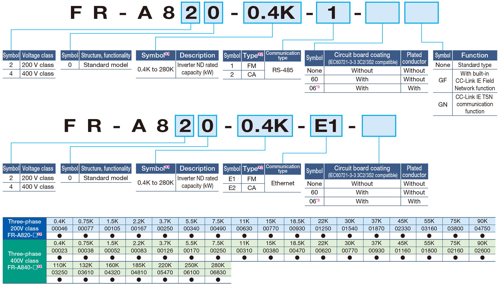
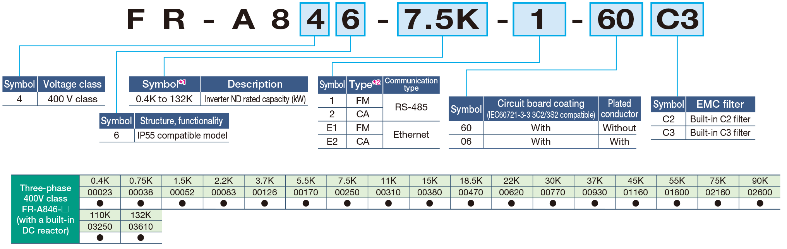
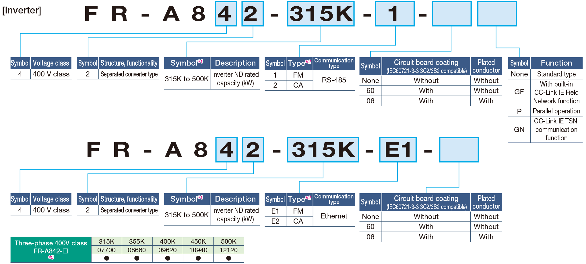
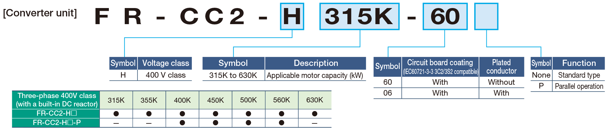

Inverters-FREQROL FR-A800 Series MODEL CONFIGURATION

For the details of the lineup, please contact your sales representative.
Standard model

●：Released model
IP55 compatible model

●：Released model
Separated converter type

●：Released model

●：Released model
-
*1Models can be alternatively indicated with the inverter rated current (SLD rating).
(For the FR-A842-P and the FR-A846, the current rating is LD or ND. However, the rated current used to represent the model is the SLD rated current of the standard model.) -
*2Specification differs by the type as follows.
Type Monitor output Initial setting Built-in
EMC
filterControl
logicRated
frequencyPr.19
Base frequency voltageFM
(terminal FM equipped model)Terminal FM (pulse train output)
Terminal AM (analog voltage output (0 to ±10 VDC))OFF Sink logic 60Hz 9999
(same as the power supply voltage)CA
(terminal CA equipped model)Terminal CA (analog current output (0 to 20 mADC))
Terminal AM (analog voltage output (0 to ±10 VDC))ON Source logic 50Hz 8888
(95% of the power supply voltage) - *3Available for the 5.5K or higher.
- *4For using the 75K or higher inverter and a 75 kW or higher motor, always install a DC reactor (FR-HEL), which is available as an option.
- *5Always install the converter unit (FR-CC2(-P)). (Not required when a high power factor converter (FR-HC2) is used.)